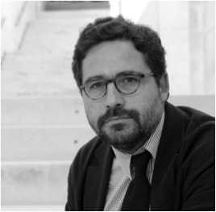

Gumersindo Lafuente
Uno de los líderes globales en periodismo online. Responsable del último cambio digital de El País, periódico online líder en castellano. Director de elmundo.es cuando su plataforma se convirtió en la más vista en habla hispana. Creador de SOITU, el único medio español incluido en la colección permanente del Newseum de Washington.

Gonzalo Fanjul
Experto en pobreza y desarrollo. Antiguo director de investigaciones de Oxfam España y uno de los ideólogos principales de las campañas de Oxfam Internacional durante más de una década. Lidera la iniciativa +Social y colabora como investigador asociado en ISGlobal, CIECODE y UNICEF. Es autor del blog de El País 3.500 Millones. Completó sus estudios en la Kennedy School of Government de Harvard.

Lucila Rodríguez-Alarcón
Ingeniera agrónoma con 10 años de experiencia en agencias de relaciones públicas en Bruselas y 4 años en comunicación. CEO de Universo Vivo, Directora de Comunicación de Intermón Oxfam y coeditora de el blog de El País 3.500 Millones.

Carlos Martínez de la Serna
Periodista especializado en medios online y periodismo de datos. Editor durante 11 años de la información de salud en elmundo.es. Profesor de periodismo en Knight Center for Journalism in the Americas (Univ. de Austin en Texas) y en IE Business School (Madrid). Es Knight fellow en la Universidad de Stanford.